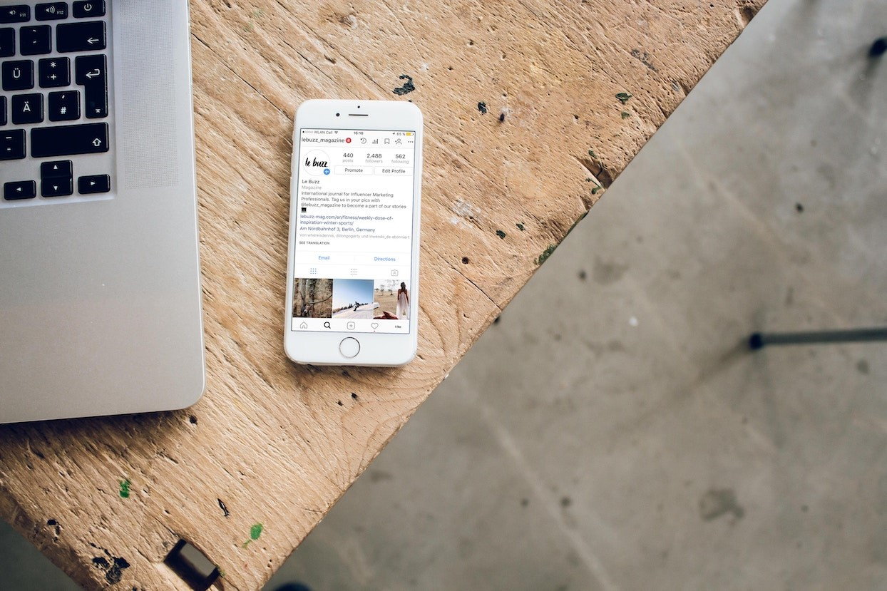
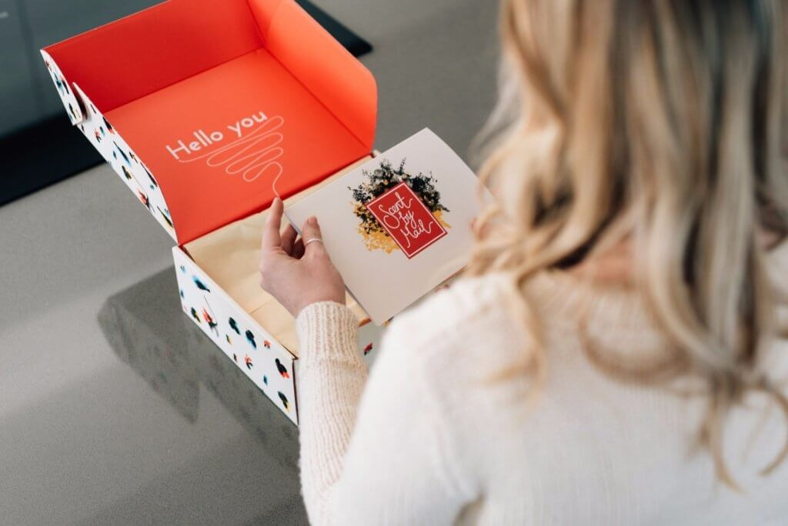
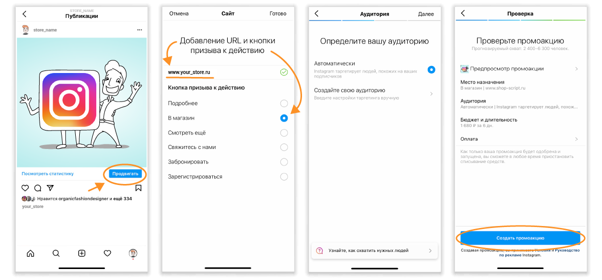
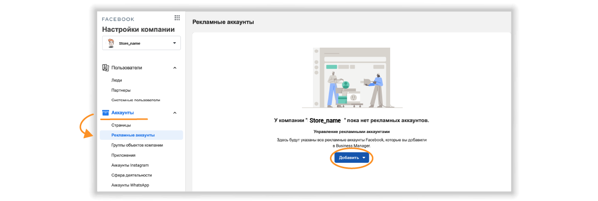
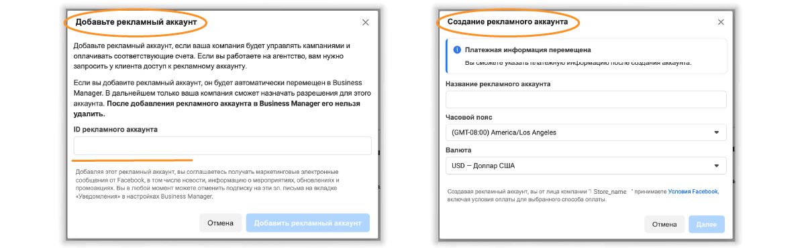
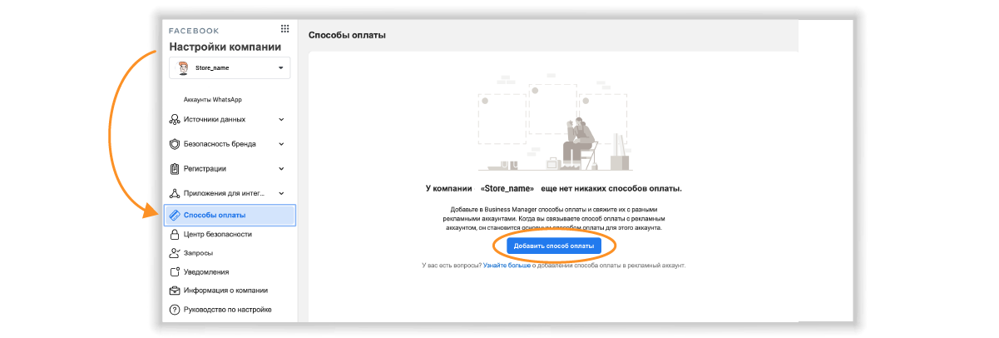
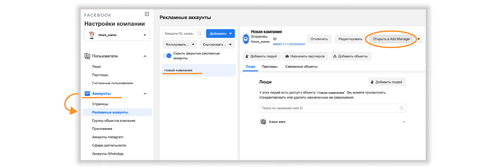
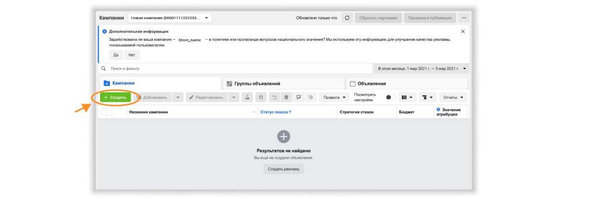
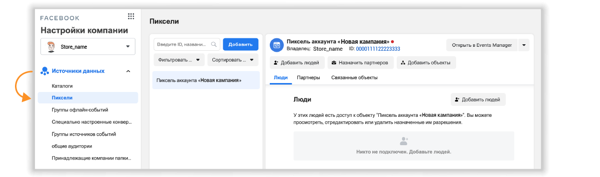

Работа в сториз, постинг, инстаграм-эфиры — это не совсем продвижение. Это чаще всего просто публикация контента и работа с той аудиторией «Инстаграма», которая у вас уже есть. Нужно предпринимать дополнительные действия, чтобы контент стал ещё и способом продвижения: привлекал новых подписчиков и продавал ваши товары и услуги.
Урок 4.3
Платные способы продвижения

Продвижение при помощи блогеров и тематических групп
Реклама у блогеров поможет вам не продавать «в лоб». Любимым блогерам и экспертам доверяют, к их мнению прислушиваются и следуют их рекомендациям.
Несколько советов, которые помогут вам выбрать «полезного» блогера:
- Аудитории блогера интересен и полезен ваш товар;
- У постов активная переписка, много лайков, сохранений и репостов — это показатель активной аудитории, а не накрученных ботов;
- Выбирайте блогера в своём регионе, тогда большая часть аудитории будет ближе и к вам;
- Оцените ленту блогера: стиль подачи, регулярность публикаций, количество рекламы.
После того как вы выберите блогера, напишите ему и предложите сотрудничество, узнайте стоимость рекламы и попросите статистику аккаунта.
Если блогер «небольшой», то можно договориться о рекламе по бартеру — предоставьте свой товар за отзыв и честную рекомендацию. Если планируете оплачивать рекламу, лучше сделать это официально — заключить договор и оплатить счёт (но это редко, обычно оплата на карту).
Для поиска блогеров, как правило, используем телеграмм канал с отзывами , ловите два канала для Беларуси:
- PR и бартер РБ ( канал для взаимо пиара)
- Otzovik Belarus ( канал с отзывами о блогерах)
Прежде чем покупать рекламу, стоит проверить охваты и приход подписчиков у блогера , чтобы не потратить деньги впустую.
Как может выглядеть рекламный пост, сторис.
Несколько примеров интересной подачи товара:
-
Распаковка
Блогер распаковывает товар, комментирует и рассказывает о преимуществах вашего товара.
-
Пример использования
Блогер использует товар по назначению: показывает и рассказывает, как он пользуется товаром.
-
Процесс использования
Идеально подходит для индустрии красоты и косметических средств. Блогер показывает на себе, как он пользуется продуктом, делится ощущениями и результатами.
Помимо блогеров, по этой же схеме можно продвигаться и в тематических группах.
Реклама в тематических группах
В вайбере , в вк в фейсбуке в инстаграм есть сообщества, объединённые определённой темой. Например, сообщества любителей живописи, детских развивающих игрушек, натуральной косметики или здорового питания. Вы можете найти активные группы по интересам вашей целевой аудитории и купить в ней рекламу по той же схеме, что и у блогеров. Только общаться вы будете с администратором или владельцем сообщества. Обычно, если группа готова к сотрудничеству, администратор отвечает на запрос в директе или по указанным в профиле контактам.
Способы, которые помогут найти подходящую группу:
- Поиск по ключевой фразе в разделе «Люди»;
- Поиск по хэштегам;
- Поисковики Google и «Яндекс» могут выдать группы по вашему описанию.
При сотрудничестве с группой отследить эффективность рекламы помогут промокоды.
Но, даже если всё сделать правильно, реакцию аудитории блогера или паблика нельзя предугадать наверняка: реклама может сработать, а может и нет.
Платные методы продвижения: таргет — чем он хорош.
Пользователю «Инстаграма» всегда что-то интересно! Площадка анализирует действия каждого пользователя: что ему интересно, в каких публикациях он ведёт себя активно, а какие пролистывает без внимания. На основе этих данных «Инстаграм» индивидуально формирует ленту для каждого пользователя. Поэтому все пользователи обычно видят тот контент, который им интересен: посты, которые они с большей вероятностью лайкнут, прокомментируют, сохранят или выполнят целевое действие. Показать ваши посты в ленте заинтересованных пользователей поможет таргетированная реклама.
Настроить её можно двумя способами:
- через инструмент «Продвижение» в «Инстаграме»;
- через Facebook Business Suite.
Расскажу о том, как настроить такую рекламу самостоятельно.
Продвижение публикации через «Инстаграм».
- Выберите публикацию, которую хотите продвигать. Откройте её и справа внизу нажмите на кнопку «Продвигать».
- Задайте настройки продвижения — выберите цель (результат, который вы хотите добиться с помощью промоакции).
-
Вы можете выбрать одну из трёх целей:
- больше посещений профиля, чтобы больше людей увидели ваш профиль и подписались на вас;
- больше посещений сайта, чтобы люди переходили в онлайн-магазин или подписывались на рассылку;
- больше сообщений, чтобы люди больше связывались с вами и задавали вопросы о ваших товарах и услугах.
- Добавьте URL страницы (если вы хотите направлять людей по ссылке) и выберите кнопку призыва к действию.
- Определите свою аудиторию: используйте автоматический выбор или вручную укажите местоположение, интересы, возраст и пол основной части посетителей.
- Установите бюджет: чем больше вы тратите, тем больше людей охватит реклама.( тестируйте с 1$, настроив все ставьте от 20 р в день в течении 30 дней).
- Задайте продолжительность акции — время, в течение которого будет действовать акция.
- Выберите, где будет показываться ваша публикация: в ленте, историях или на вкладке «Интересное». Можно выбрать вариант «Автоматически», чтобы публикацию увидели в историях и во вкладке «Интересное».
- Проверьте верность настроек, выберите способ оплаты и нажмите на кнопку «Создать промоакцию».
Как продвигать публикацию в «Инстаграме». Шаги 1, 3, 4 и 8:
После проверки ваша акция запустится. В профиле можно будет следить за результатами и при желании в любое время остановить списание средств.
Таргетированную рекламу можно настроить более детально через Facebook Business Suite. Расскажу, как это сделать и в чём отличия этого способа от предыдущего.
Как настроить таргетированную рекламу через Facebook Business Suite
Facebook Business Suite позволяет управлять связанными аккаунтами «Фейсбука» и «Инстаграма». Здесь можно делать следующее:
- следить за обновлениями в лентах «Фейсбука» и «Инстаграма»;
- читать комментарии и сообщения со страницы Facebook, из Messenger и аккаунтов «Инстаграма», отвечать и создавать автоматические ответы;
- создавать и планировать новые публикации для обеих соцсетей;
- просматривать статистику и задавать метрики;
- запускать рекламные кампании и продвигаться.
👉Чтобы иметь возможность управлять своим аккаунтом «Инстаграма» и продвигать в нём публикации через Facebook Business Suite, необходимо выполнить два условия: аккаунт вашего магазина должен иметь статус бизнес-аккаунта и быть привязанным к Странице «Фейсбука». Для этого при регистрации бизнес-аккаунта нужно создать новую страницу или привязать к аккаунту существующую страницу, администратором которой вы являетесь.
Когда все условия выполнены, можно настраивать рекламную кампанию.
Инструкция: как настроить таргетированную рекламу через Facebook Business Suite.
-
Переходим на сайт business.facebook.com. Вся подготовительная работа по продвижению и управлению аккаунтом происходит в «Настройках компании». Перед тем как начать рекламироваться, нужно создать рекламный аккаунт:
 -
Для рекламной кампании вы можете выбрать уже существующий рекламный аккаунт или создать новый:
 -
После того как вы выбрали или добавили новый рекламный аккаунт, через который будете запускать рекламу, возвращаемся в меню «Настройки компании — Аккаунты Instagram». Здесь находятся все аккаунты «Инстаграма», в которых вы можете запускать рекламу. Если нужного аккаунта в списке нет, нужно его добавить:

-
Следующим шагом нужно добавить способ оплаты. Для этого в меню «Настройки компании» находим «Способы оплаты — Добавить способ оплаты» и заполняем платёжные данные.
 -
После того как вы выбрали рекламный аккаунт, привязали к нему аккаунт «Инстаграма» и добавили способ оплаты, можно создавать рекламную кампанию. Для этого переходим в «Рекламные аккаунты», открываем нужный аккаунт и справа в меню выбираем «Открыть в Ads Manager»:
 -
Открывается рабочая панель. Здесь настраивается рекламная кампания. Выбираем вкладку «Кампания» и нажимаем «Создать»:
 -
Следующий шаг — нужно выбрать цель кампании:

Рядом с каждой целью можно прочитать краткое пояснение.
Выберите желаемую цель и подтвердите выбор. Далее продолжайте действовать по шагам, которые предлагает система. Для каждой цели будет доступен свой набор шагов.
- Например, если вы выберите цель «Конверсия», шаги будут такими:
- ввести название;
- настроить объявление: выбрать фото или видео, кольцевую галерею или подборку;
- добавить рекламные креативы: медиафайл или видео;
- настроить отслеживания по конверсиям.
- Если вы выберите цель «Трафик», тогда сможете:
- поставить ограничения по бюджету, если нужно;
- обозначить сроки: выставить дату начала и дату окончания кампании;
- выбрать аудиторию и детальный таргетинг — на кого будет направлена реклама: по интересам, демографическим данным и поведению;
- направить трафик только на «холодную» аудиторию, чтобы не тратить бюджет на тех, кто уже знаком с вашим магазином;
- выбрать места размещения; для «Инстаграма» можно выбрать: Ленту, истории, поиск и т. д.
👉У каждого рекламного объявления свои форматы. Для Ленты нужен квадрат, для Истории — вертикальное изображение с пропорциями 9:16. . Важно самому заранее подготовить креатив в соответствии с этими размерами, чтобы система автоматически не обрезала картинку и реклама смотрелась красиво. Вы сможете загрузить отдельный материал под каждый формат.
После того как вы заполнили все данные и загрузили рекламное объявление, можно пройти по кнопке «Проверка», чтобы посмотреть, что получилось. Если всё хорошо нажимайте на кнопку «Опубликовать». Когда ваша кампания пройдёт проверку, она запуститься и начнёт собирать статистику. Статус промоакции и все данные будут отображаться в рекламном кабинете.
Ретаргетинг
Также можно настроить ретаргетинг. Ретаргетинг — это повторная реклама, рассчитанная на тех людей, кто уже проявил интерес к вашим товарам или странице. Ретаргетинг можно настроить на посетителей сайта, на посетителей и подписчиков профиля, на людей, кто взаимодействовал с вашими публикациями.
Чтобы выбрать аудиторию для ретаргетинга, в настройкам кампании выберите соответствующую целевую аудиторию во вкладке «Связи» детального таргетинга или поставьте пиксель аудитории.
Пиксель «Фейсбука» (Facebook Pixel) — это фрагмент кода, который позволяет собирать информацию о действиях посетителей на сайте: визиты, просмотры страниц, клики. Вы можете настраивать пиксели на определённые действия посетителей и собирать с их помощью отдельные сегменты аудитории. Для этого перейдите в раздел «Ads Manager — Events Manager — Пиксели».
После того как вы создадите пиксели и наберёте по ним сегменты аудитории, сможете запустить ретаргетинг, задав соответствующий пиксель в настройках рекламной кампании.
Но любые акции не принесут желанные плоды, если магазин не готов к продвижению. Расскажем о типичных ошибках, которых нужно избегать, если вы хотите, чтобы продвижение сработало как надо.
Ошибки, из-за которых продвижение не работает
-
❌ Профиль не подготовлен.
✅ Оформление должно быть продающим: фирменный аватар, понятное имя, чёткое описание и УТП (уникальное торговое предложение), чтобы заинтересовать зрителя. Обязательно сформируйте закреплённые истории с основной информацией. Лента — в общем стиле, с качественными и красивыми фотографиями.
-
❌ Не определена целевая аудитория.
✅ Позиция «продаю всем» не работает. Важно чётко определить аудиторию, которая заинтересуется вашим предложением.
-
❌ Плохое качество блога.
✅ С первого взгляда должно быть понятно, к какому сотрудничеству вы готовы: только к продажам на сайте или к активной коммуникации в постах, историях и директе. Для этого позаботьтесь о качестве текстов: пишите чётко, интересно и по делу. Используйте меньше прилагательных, больше глаголов и полезного действия. Напишите, какую проблему помогает решить ваш продукт: не «наш товар самый прекрасный и уникальный», а «наш крем напитает кожу, и вам не придётся дополнительно увлажнять её в течение всего светового дня». Хэштеги добавляйте в первом комментарии, чтобы не отвлекать от сути поста.
-
❌ Нет заголовков.
✅ Если в тексте поста нет заголовка, непонятно, зачем читать дальше. Заголовок цепляет и затягивает, задаёт тон всему тексту. Чтобы читатель развернул текст и прочитал о вашем предложении, обязательно придумывайте интересные заголовки: используйте интригу или триггер.
-
❌ Отсутствует призыв к действию.
✅ Подумайте, какую проблему решает ваш товар, расскажите о выгодах и подтолкните зрителя к действию: купить, написать, перейти, успеть, позвонить и т. д. Призыв к действию даёт чёткое направление, куда двигаться. Без него шансы получить желаемый эффект снижаются.
-
❌ Однотипное визуальное оформление.
✅ Используйте разные приёмы для оформления своих публикаций: помещайте надписи на изображения, добавляйте видео, показывайте детали отличного качества, моделей и экспертов, которые пользуются вашими товарами. Разнообразные визуальные приёмы в общем стиле — это интересно! Это то, что заставляет «залипнуть», просматривать, реагировать и вникать. Помните: красоты много не бывает.
-
❌ Нет отзывов.
✅ Отзывы — лучшее социальное доказательство и демонстрация качественного сервиса. Сохраняйте отзывы, публикуйте их в сториз и сохраняйте в закреплённых историях. Усиленный эффект принесут отзывы в формате «до и после». Если интересно узнать, как мотивировать покупателей оставлять отзывы, дайте знать в комментариях — соберём для вас несколько идей для постов и сториз, лишь бы информация была вам полезна :)
«Инстаграм» может стать источником клиентов и прибыли. Продвижение поможет вам завоевать самое главное — реакции людей: лайки, репосты, сохранения, комментарии, переходы на сайт и продажи. Сочетайте инструменты продвижения с умом, удовольствием и хорошим вкусом, чтобы обеспечить рост своего аккаунта!
Я очень много пересмотрела видео по запуску рекламы, ниже приведу вам варианты самых понятных методах.
-
ТАРГЕТИРОВАННАЯ РЕКЛАМА ФЕЙСБУК 2021 | ЗАПУСК И НАСТРОЙКА РЕКЛАМЫ FACEBOOK
Из видео вы узнаете как создавать рекламу в Facebook и Instagram, которая дает заявки через 1-3 после запуска.
-
Как создать Business Manager Facebook/бизнес менеджер фейсбук.
Просто делай по шагам .